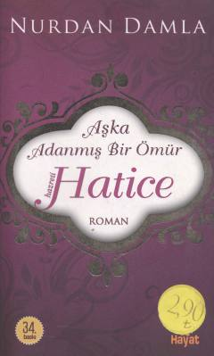

AAHazrat Xadichaning hayoti va fidokorona muhabbatiga bag'ishlangan ta'sirli asar.
Ushbu kitob Islom tarixidagi buyuk ayollardan biri, Payg'ambarimiz Muhammad sollallohu alayhi vasallamning birinchi zavjasi Hazrat Xadichaning hayoti va uning fidokorona muhabbatiga bag'ishlangan. Asar muallif Nurdan Damla qalamiga mansub bo'lib, uning hayot yo'li va axloqiy fazilatlarini yoritib beradi.